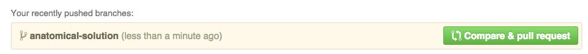

Making a feature branch¶
Now we have our github fork set up, we can make feature branches and review the homework with pull requests.
In general, this is an excellent way to ask for feedback on code.
We now want to review the solutions to the exercises:
anatomical.py;image_4d_std.py;first_activation.py.
Let’s start by making a feature branch for the anatomical.py file:
cd fmri-analysis-2015
git branch anatomical-solution
git checkout anatomical-solution
This branch is for a single “feature” - that is - one coherent chunk of work.
In this case, it’s for the anatomical.py exercise solution. This is a bit
crude, but let’s just copy this file from the old fmri_methods
repository:
mkdir day2_homework
cp ../fmri_methods/anatomical.py day2_homework
git status
Now let’s add this file, and make a commit:
git add day2_homework/anatomical.py
git commit
In order to make the pull-request, we need to have this branch up on github:
git push your-github-username anatomical-solution --set-upstream
Now go to the web page for your fork - something like https://github.com/your-github-username/fmri-methods-2015.
You should see something like this near the top of the page:
Click on this button and fill in the details. Finally click on the “Create pull request” button. Now we can get going with the review.